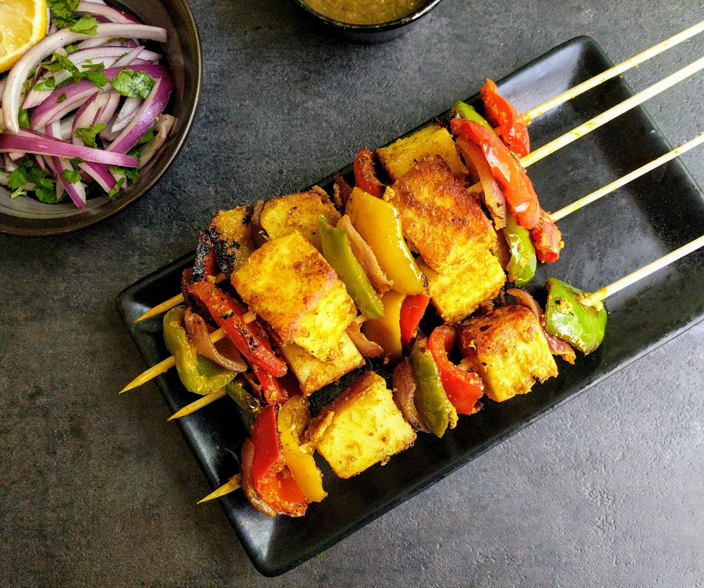
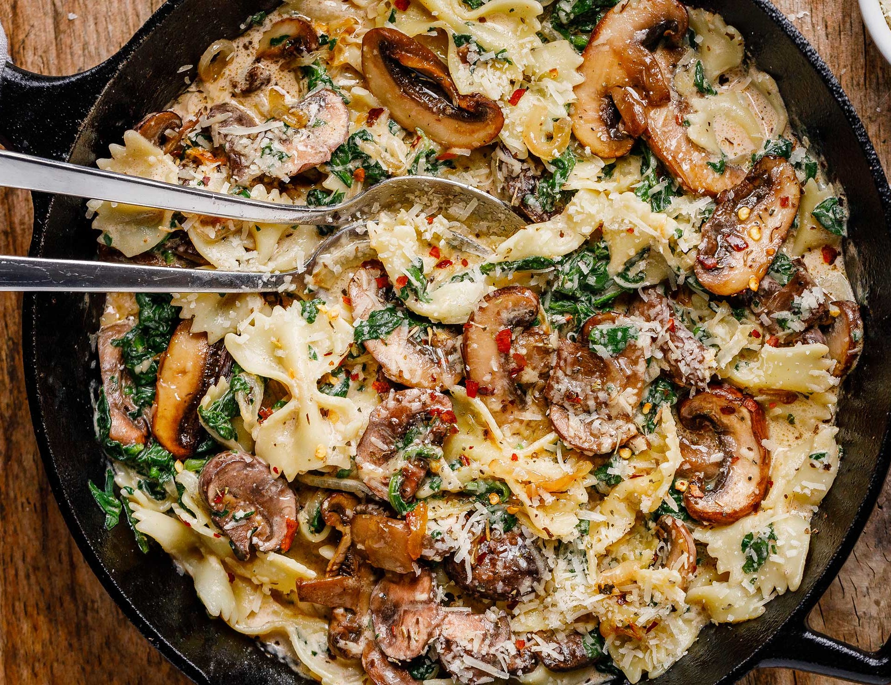

Paneer Tikka
- 250 grams of paneer (Indian cottage cheese), cut into cubes
- 1/2 cup thick yogurt
- 1 tablespoon ginger-garlic paste
- 1 tablespoon red chili powder
- 1/2 teaspoon turmeric powder
- 1 tablespoon garam masala
- 1 tablespoon coriander powder
- 1 tablespoon cumin powder
- Salt to taste
- 2 tablespoons vegetable oil
- Skewers (wooden skewers soaked in water for 30 minutes or metal skewers)
- Cooking oil for brushing
Ingredients
For the Marinade:
For Skewering and Grilling:
Instruction:
Prepare Marinade:
Combine yogurt, ginger-garlic paste, spices, salt, lemon juice, and oil in a bowl to make a smooth marinade.Marinate Paneer:
Coat paneer cubes in the marinade, cover, and refrigerate for at least 1 hour, preferably overnight.Skewer Paneer:
Preheat grill or oven to 200°C (392°F). Thread marinated paneer onto skewers, leaving space between each piece.Grill Paneer:
Brush skewered paneer with oil. Grill for 10-15 mins, turning until charred with grill marks.Serve:
Slide paneer tikka off skewers onto a plate. Garnish with onions and lemon.

Creamy Garlic Parmesan Pasta
- 8 ounces (about 2 cups) of your favorite pasta (e.g., fettuccine, linguine, or spaghetti)
- Salt for pasta water
- 2 tablespoons butter
- 4 cloves garlic, minced
- 1 cup heavy cream
- 1 cup grated Parmesan cheese
- Salt and pepper to taste
- Fresh parsley or basil for garnish (optional)
Ingredients
For the Pasta:
For the Creamy Garlic Parmesan Sauce:
Instruction:
Cook Pasta:
Boil salted water, add pasta, cook till al dente (8-10 mins), then drain, reserving 1/2 cup water.Make Sauce:
Sauté minced garlic in melted butter. Add cream, simmer for 2-3 mins.Add Cheese:
Whisk in grated Parmesan until melted and sauce thickens (2-3 mins).Season and Mix:
Season with salt and pepper. Adjust consistency with reserved pasta water if too thick.Combine:
Toss cooked pasta in the creamy garlic Parmesan sauce until coated.-
Serve:
Transfer to serving plates. Garnish with fresh parsley or basil . Serve hot, and enjoy your delicious pasta!
